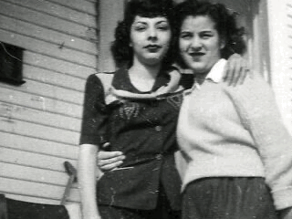
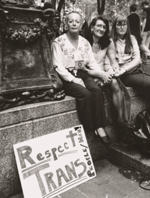
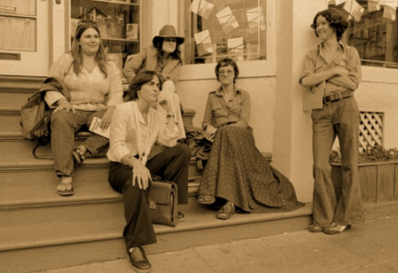
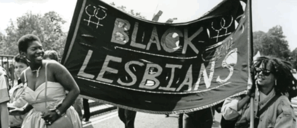
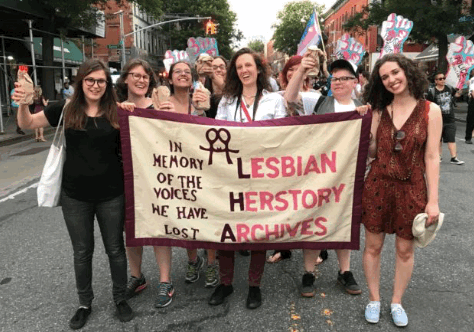

Lesbians have played a pivotal role in shaping the LGBTQ+ community, fighting for equality, and advocating for justice. While often overlooked in mainstream narratives, their contributions to social movements are immeasurable, and their legacy deserves recognition.
Historical Figures
Lesbians like Audre Lorde, Marsha P. Johnson, and Sally Ride made groundbreaking contributions to civil rights, activism, and representation. Lorde's poetry challenged the status quo, Johnson's activism helped ignite the LGBTQ+ liberation movement, and Ride’s achievements in space showed the world the limitless potential of women.
Lesbian Feminism
The rise of lesbian feminism in the 1970s advocated for women’s rights, reproductive freedom, and social justice. Lesbian feminists challenged gender norms and created spaces for women to be empowered and heard. The Lesbian Herstory Archives remains a key resource in preserving this history.
Visibility and Representation
While lesbian representation in media has often been limited or misrepresented, there has been significant progress. Shows like The L Word and Orange is the New Black have amplified lesbian voices, though there is still work to do for more authentic and diverse portrayals of lesbian experiences.
Struggles and Resilience
Lesbians have faced unique challenges, both from society and within the LGBTQ+ community. Discrimination, invisibility, and societal pressures to conform have made the fight for recognition and equality ongoing. Despite this, lesbians have remained resilient, advocating for their rights and visibility.
The Fight for Equality
Today, lesbian activism continues to focus on healthcare access, legal rights, and fighting discrimination. The struggle for equality isn’t over, and the work of past and present lesbians ensures the fight for justice will continue.
By reflecting on their achievements and challenges, we honor the powerful legacy of lesbians in the LGBTQ+ community. For more resources on lesbian advocacy, visit organizations like the Lesbian Herstory Archives and the Lesbian Foundation for Justice.
Lesbian History in Pictures
Explore images from the history of lesbian activism, pride, and cultural milestones. These photos capture the spirit of resistance, love, and the fight for equality.




